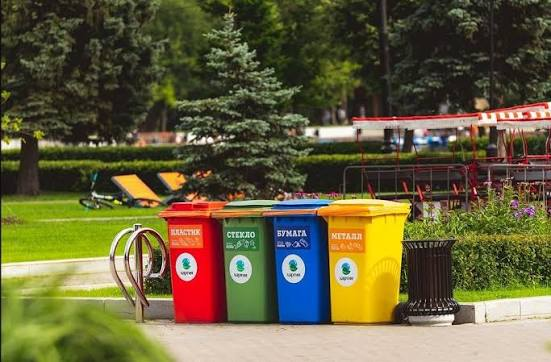
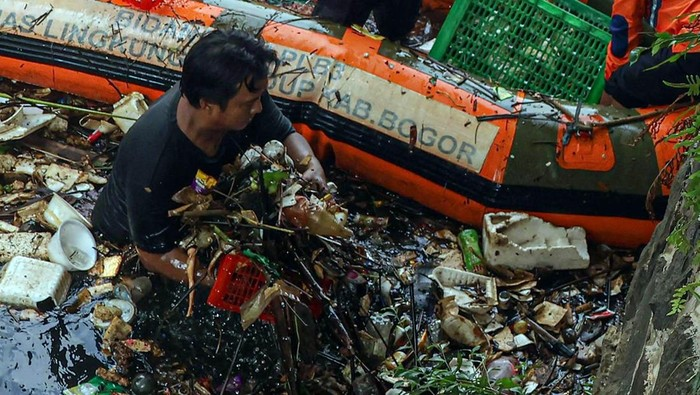

Pencemaran lingkungan merupakan suatu kondisi di mana terjadi perubahan besar pada tatanan lingkungan akibat perkembangan ekonomi dan teknologi yang pesat. Perubahan kondisi tersebut kerap kali melebihi batas ambang dari toleransi ekosistem, sehingga memicu lonjakan jumlah zat asing berbahaya di sekitar kita.